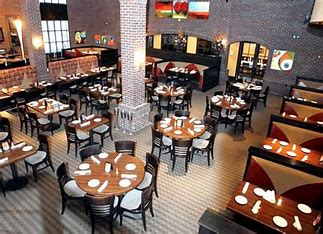

Our Story
Founded in **2020**, The Otto started as a dream to bring **authentic flavors and warm hospitality** to the heart of the city.
Our goal is simple: **create unforgettable dining experiences** with locally sourced ingredients, handcrafted recipes, and a welcoming atmosphere.
